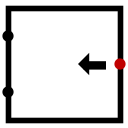

移位器
| 库: | 运算器 |
| 引入版本： | 2.3.0 |
| 外观： |  |
行为
该组件包含两个输入：data 与 dist，以及一个输出端。输出结果为将 data 按 dist 指定的位数进行移位后的值。data 与输出具有相同的位宽。组件支持以下几种移位类型：
- 逻辑左移：将 data 中的所有位向高位方向移动 dist 位，低位补 0。例如，11001011 逻辑左移 2 位得到 00101100（最高两位被丢弃）。
- 逻辑右移：将 data 中的所有位向低位方向移动 dist 位，高位补 0。例如，11001011 逻辑右移 2 位得到 00110010（最低两位被丢弃）。
- 算术右移：将 data 中的所有位向低位方向移动 dist 位，高位用原最高位的值进行填充。例如，11001011 算术右移 2 位得到 11110010。
- 循环左移：将 data 中的所有位向高位方向移动 dist 位，移出的高位重新回绕到低位。例如，11001011 循环左移 2 位得到 00101111。
- 循环右移：将 data 中的所有位向低位方向移动 dist 位，移出的低位重新回绕到高位。例如，11001011 循环右移 2 位得到 11110010。
注意：如果 dist 输入中包含悬空位或错误位，则由于无法确定移位距离，输出将全部为错误值。
引脚
- 西侧上端（输入，位宽与“数据位宽”一致）
- 需要进行移位操作的数据输入 data。
- 西侧下端（输入，位宽按规则计算）
- 移位距离输入 dist，表示对 data 进行移位的位数。该输入的位宽应为能表示从 0 到“数据位宽减 1”的最小位数，即 ⌈log₂(数据位宽)⌉。例如，当数据位宽为 8 时，需要 3 位；当为 9 时，需要 4 位。
- 东侧（输出，位宽与“数据位宽”一致）
- 按指定移位类型和移位距离得到的结果。
属性
当组件被选中或正在放置时，Alt-0 到 Alt-9 可修改其 数据位宽 属性。
- 数据位宽
- data 输入端及输出端的位宽。
- 移位类型
- 指定移位方式，可选：逻辑左移、逻辑右移、算术右移、循环左移或循环右移。
手形工具行为
无
文本工具行为
无
返回 库参考手册